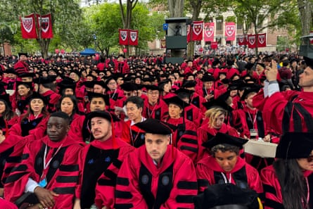

N ext May, I should be walking across a stage at Harvard – my two-year-old daughter in my arms, my name called out, my doctoral hood placed over shoulders that have carried far more than academic ambition.
It was going to be more than a graduation. It was to be a culmination, a reclamation. My daughter’s presence would symbolise not only my personal triumph but the very journey that led me here: discovering my own uterine fibroid when I decided to become a mother inspired my doctorate.
Together, mother and daughter would cross a finish line that generations before me weren’t even allowed to approach.
This summer, after years of balancing motherhood, research and rigorous study, I was ready to return briefly to Harvard to defend my doctoral dissertation – one final, vital step before next year’s graduation. Instead, I am in Sierra Leone , denied the ability to return – not due to misconduct, overstaying or fraud – but simply for being Sierra Leonean.
Under new restrictions enacted in June 2025 , Sierra Leoneans – and nationals from several other countries – are now denied non-immigrant visas. Our individual circumstances do not matter. I have met every previous legal requirement. I have complied with every visa stipulation throughout my academic journey. I can demonstrate a clear intent to return home. My research is on African women’s reproductive health, and I intend to continue working on the continent. Still: no.
The sudden denial, without recourse or meaningful appeal, sends a chilling message to thousands of international students who now face a similar fate: educational dreams suspended, futures uncertain, doors closed without warning or reason. This amplifies the already overwhelming fears and hurdles we face. It has never been easy to get a visa. I had to prove financial solvency, undergo invasive medical screenings, pass extensive background checks, and demonstrate to US immigration authorities that my presence would constitute “national value”. Even after fulfilling these rigorous demands, students such as me are now vulnerable to sudden exclusion.
Scholars gather for a graduation ceremony at Harvard University in Cambridge, Massachusetts, on 29 May.Photograph: Rick Friedman/AFP/Getty Images
The impact of this ban reaches deeper than individual disappointments. It disrupts academic communities, weakens critical international collaborations, and undermines global scholarship that profoundly benefits the US. My research – focusing on uterine fibroids, a condition severely affecting women’s lives across Africa and globally – is critical to advancing women’s health.
Through my social impact venture, Youterus Health , we centre African women’s experiences, turning insight into action by mobilising resources and creating systemic solutions for neglected gynaecological conditions – including abnormal uterine bleeding, fibroids and adenomyosis. These conditions directly affect maternal health, economic empowerment and global equity. Our work elevates uterine care within maternal and reproductive health agendas, challenging historic neglect and reshaping healthier futures for women and communities everywhere.
Harvard has embraced me and my work. When I gave birth to my daughter in 2023, I sat for my written exams just two weeks later. Harvard’s unwavering support during that intense period made me believe that merit would always outweigh difficult circumstances. The US government’s decision undermines this belief, revealing a deeper systemic issue: a harsh, bureaucratic racism selectively silencing voices from African and Middle Eastern countries.
This exclusion is neither isolated nor new. African scholars have long navigated bureaucratic hurdles designed to quietly but persistently deny our presence. This latest policy continues a historical pattern of selective exclusion. Yet even during earlier restrictions, such as bans during Trump’s first term, many of us held hope. We believed our achievements, resilience and the genuine value of our work would speak louder than our passports.
Today, students from banned countries face intensified exclusion without clear paths for appeal or resolution.
I have tried to remain positive, to respond with grace. But the truth is, this decision cuts deeply. It denies me not only the moment I earned on that graduation stage but dims the aspirations of countless others who, like me, envision using their education as a force for global good.
What do we do when we’ve done everything right yet find ourselves standing at locked doors?
We speak louder. We write bolder. We name these wounds clearly, defiantly. And we persist in rewriting the narrative. I am not just missing the Harvard graduation. The US will be missing what I can offer.
Our value – my value – is not defined by a stamp in a passport. Yet, this moment calls for allies in academia, policy and beyond to recognise and actively challenge these systemic barriers. Because a closed door for some diminishes the potential of all.
- Fatou Wurie is a doctoral candidate at Harvard T H Chan School of Public Health and founder of Youterus Health, a pioneering African women’s health venture.